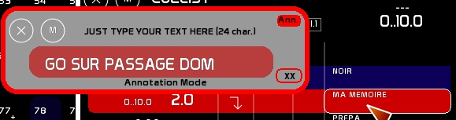
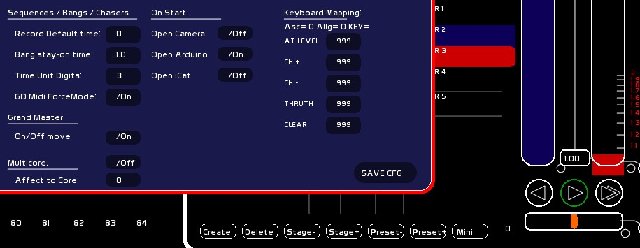

Table des matières
CueList
Accessing to CueList:
Click [CueList] or press [F9]

Definition
- it is also called SEQUENCES because here in France we are very used to AVAB terminology
- SEQUENCES is a memory handler
- lighting states are recorded inside memories
- those memories are recordable with a number (mem 1, mem 125, mem 999)
- they can be set to any number from mem 0 up to mem 999.9
- their order of appearance in the cue list is sequential, ie in ascending order
- between each whole numbered memory you have 9 places to insert additional memories, so called “dot memories” or “point cues”: .1 .2 .3 .4 … up to .9
- each memory is assigned times for cross-fading from one memory to another.
- this cross-fade may be done in a number of ways:
- by hand, with the mouse or a midi interface with faders
- by a Go which will launch a cross-fade in a pre-recorded time (speed)
- this CueList output is parallel to the output of the channels handled by the faders
- when you are manipulating channels by setting their levels, or when using the arrow keys, in fact you are working on the “onstage memory”.
- when you are manipulating channels in BLIND mode, you are working on the memory in preset.
- between the type channels which are controlled by the CueList (blue color) and those controlled by the faders (orange color), the Highest level takes precedence and is the one sent through the patch routing and then to the dmx interface.
To access the CueList click [CUELIST] or press [F9]
General presentation

1- memories area (from top to bottom):
- memory previous to the onstage memory
- memory presently onstage (blue background), so levels are the current lighting levels
- memory in preset/blind, waiting for a GO, (red background)
- the next 6 memories after the preset
Those memories are showing, from left to right:
- delay time and cross-fade time
- number of the memory
- if the memory is linked or not (an autofollow link is shown by a downward arrow)
- if any automation is included in the memory (Banger), with the number of its automation
- description of the memory
2- cross-fade area:
- master of the onstage memory (in blue)
- master of the preset memory (in red)
- ratio slider for manual mouse cross-fading
3- Go area:
- the 3 Go buttons: Go Back, Go, and DoubleGo (aka Jump)
- cross-fade's accelerometer
4- basic manipulation space: creating/deleting a memory, quick navigation onstage or in preset
Basic manipulations
Creation of a memory
- Set channels on stage or in preset
- Type the memory number (ex. 27.5)
- Click [NEW] or press [SHIFT][F1]
! Have a look at the feedback string where it shows the Last command.
Deleting a memory
- Type the memory number (ex. 27.5)
- Click[DEL] or press [SHIFT][DEL]
From v.0.8.2.2 onward: if any number is typed, being in Blind Mode or not, it will define the mem onstage or mem on preset to be the memory to be deleted.
Over-record a memory
Over-recording a memory onstage or in preset
Over-recording replaces every channel.
- Modify the lighting state on stage or in preset
- mouse:
- click [STORE]or press [F1]
- click the memory number box in the CueList window

- keyboard :
- press [CTRL][F1] to over-record
These adjustments will take effect immediately to the memory on stage or the memory in preset
Over-recording to a different memory, not the one in preset or onstage
- type the memory number
- press [SHIFT][F1] to call this memory on the fly.
Modifying only certain channels without erasing everything
You may need to discreetly change only certain channels without changing the entire global lighting state.
For example, during performance, you notice that channel 65 is set 20 points too high in 3 memories.
Instead of navigating through the memories to over-record them:
- select the channel and set it to the desired intensity (either from stage or from preset)
- click [MODIFY] or press [F2]
- click the memory number box
Recording a memory that combines the channels from the Cuelist and from the Faders
A memory can also be recorded using only the Fader's buffer.
- click [REPORT] or press [F3]
- click the memory number box
! In live onstage mode, Faders will be set to 0 after the report of their intensities in the onstage state, but in Blind, they will keep their levels.
Short-Cuts are enabled only for stage:
- create a memory from stage and faders output:
- type num of mem to create
- press [SHIFT][F3]
- confirm
- over record the onstage memory with faders output included:
- press [SHIFT][F3]
- confirm
Copying quickly from one memory to another
From version 0.8.2.2 onward, using [CTRL][C] and [CTRL][V]
Are copied: channel states, memory description and annotation, times, link, banger assigned to the memory.
If the numerical entry contains numbers (here it is 32), those are considered as memory and not channels to copy:

- type mem number you want to copy (here it was 25)
- [CTRL][C] (please look at user feedback: Mem.To Copy print the mem number you will copy in)
- type the memory number to create or replace (32)
- [CTRL][V]
- confirm
Quick navigation from memory to memory, CUT
Quick navigation enables to you to cycle through the memories (on a zero count) without waiting for the cross-fades to be processed.
You can change the memory on stage:
- by mouse with [Stage -] or [Stage +]
- by keyboard by pressing [CTRL][W] or [CTRL][X] (that's Ctrl-Z and Ctrl-X for those of you with an English keyboard)
By changing the memory onstage, the Cuelist will also be refreshed to display the correct preset memory and following memories.
Or you can also do the same thing, without changing onstage state, by changing the preset memory:
- by mouse with [Preset -] or [Preset +]
- by keyboard by pressing [SHIFT][W] or [SHIFT][X] (that's SHIFT-Z and SHIFT-X on an English keyboard)
GOTO: quickly loading a specific memory
- Type your memory number
- click the onstage memory number box (blue) if you want to load it onstage or the preset box (red) to load in preset
You can do this while a cross-fade is happening or while paused. Go will also refresh the time information, but only for preset changes.
Calling memory 0.0 is possible for the preset (0.0 is always a blank memory, so a black-out), but not for onstage.
Time assignments
Time assignments are always done with the memory in preset. It's the preset memory, the memory to come, in which are recorded the fade out time of the onstage memory as well as its own fade in time. You need to think Preset.
Assigning a time works like this:
- choose the fade in time of this memory
- choose the fade out time of the memory presently onstage
You can assign the times in different ways, depending
- if you are assigning times to the memory in preset or the memory onstage
- if you are assigning times to other memories in the CueList
Changing time for a memory onstage or in preset

If you want to assign times:
- to an incoming cross-fade, you will assign times in preset space (red color)
- to the last completed cross-fade by assigning times to the onstage memory (blue color)
You can make these changes in two ways:
- using Time window, set [AFFECT] ON and click the memory number box on the preset or onstage
- typing your time directly, using the time conventions ( 1..23. for ex.), and directly click the time boxes IN, OUT, or Delay IN/Delay Out of the preset

Changing times for another memory other than the one in preset or the one onstage
… it needs to be visible in the Cuelist window:
- use window Time, set [AFFECT] ON and click the memory number box

Giving a description to a memory
- - Call the Name window either by clicking the onscreen button or pressing [F5]
- type your description (normal or annotation mode)
- click the description box of the memory

Notice that you have 2 lines of 24 characters each. The second line is editable using [ANN] mode.

Manual Cross-fade
There are two types of manual cross-fades:
- cross-fading with the mouse
- corss-fading with midi devices
Mouse manual cross-fade
When the CHAIN icon is ON, moving the preset master up will move down the onstage master, and visa versa, in a linear way.

But we are quite accustomed to using our fingers to do a split cross-fade on a traditional lighting board, where the preset is beginning to come up, warming the filaments, before bringing down the onstage master. It is impossible to “take a lead on the cue” in this way by using only the mouse, which can only move one thing at a time.
For this, you can set a ratio. Ratio (here its value is 1.47), this enables you to begin going down with the onstage master once this ratio has been reached in the preset (red numbers on the right of the preset master). Then the onstage master will fade down proportional to the preset cue coming in.

! This ratio is for manual use only when using the mouse. It is not taken into account by midi devices or by the Go button.
The ratio is recorded inside the memory that is in preset.
Manual cross-fade with midi devices
See Midi Configuration and Midi Assignments.
- stage and preset masters are both remote controllable in midi.
You don't need to edit special midi curves for them, everything is already set in White Cat. Once the cross-fade is completed in midi, you need to bring your two faders back to the UP position.
The Red circles enable the remote control by a motorized midi control surface.
Cross-fade with GO

A Go Cross-fade takes place in the times recorded in preset memory, as adjusted by the accelerometer factor.
The Times displayed in preset are directly the result of the modification made by the accelerometer.
If a delay In or OUT is still not finished, the master will flash in RED.
To do GO, in the time set:
- mouse: click the center arrow, the GO button.
- keyboard: hit [SPACE]
To PAUSE the cross-fade, click GO again or re-hit [SPACE].
To GO BACK:
- mouse: click pointing left arrow, the GO BACK button.
- keyboard : press [CTRL][SPACE]
To do a DOUBLE GO (jumping from current cross-fade to next one):
- mouse: click the DOUBLE arrow, the DOUBLE GO button.
- Keyboard: press [SHIFT][SPACE]
Go Midi ForceMode
ForceMode is only for midi remoting (with Apps like Live for example).
If On, and a cross-fade is running, pressing Midi Key for the Go will not trigger a pause, but a Jump. Only for midi, not concerning keyboard or arduino.
When ForceMode is /On Go is outlined in Green color.

Linking memories
If the [Link] option is activated and there is a link between 2 memories: when a cross-fade has just finished, the next cross-fade starts automatically.
If the memory fading in onstage has an embedded link, the next cross-fade will be done automatically.

Assign/unassign a link to a memory
Just click the link column in the Sequences window on the correct memory number line. An arrow will appear to signify the link.
Activating Link mode
Click the [Link] box at the top of the Cue List.
Banger: Automations and complex encoding
A Banger is a set of 6 events that can be attributed to a Cue. Those events are edited in Banger Window, with delays to take effect based on the GO time.
A Banger enables you to create a channel time effect with Faders, to make an audio player select a file and play it, to send a midi out signal, to activate windows… Well, in fact there are many things you can do with the bangers.
Assign/unassign a Banger to a memory
Type the Banger Number, click in the Banger column of the correct memory in the box that appears. To clear it, just type 0 and click the Bang Box of the memory again.
Activating Bang mode
Do not forget to activate the [Bang] box at the top of the Cue List window.
Double CueList
The 4 GridPlayers may be used with Banger inside the CueList, enabling evoluated effects construction launched by GO.
GridPlayers structure is like 4 parallels CueLists. To ease the use of a GridPlayer in your CueList, you can embed GridPlayer 1 in it.
Only the GridPlayer 1 may be embeded inside the CueList. Other GridPlayers should be used with banger automations, or manually.
You will benefit if all the CueList functions: Go Back, Jump, quick navigation (W/X), and also slave the GridPlayer 1's accelerometer are all controlled by to cross-fade's accelerometer.
GrdiPlayer 1 is a solution to do channel times evoluated effects.
Despite GridPlayer 1 is embedded inside the CueList, its output is still assigned to a Fader (channels in orange color)
To activate GridPlayer1 in CueList click [GPL1] box in the CueList window.
The CueList window will be extended, enabling general manipulations of the GridPlayer, without the matrix view.
See Grid documentation and the section dedicated to double CueList for the manipulations and use.